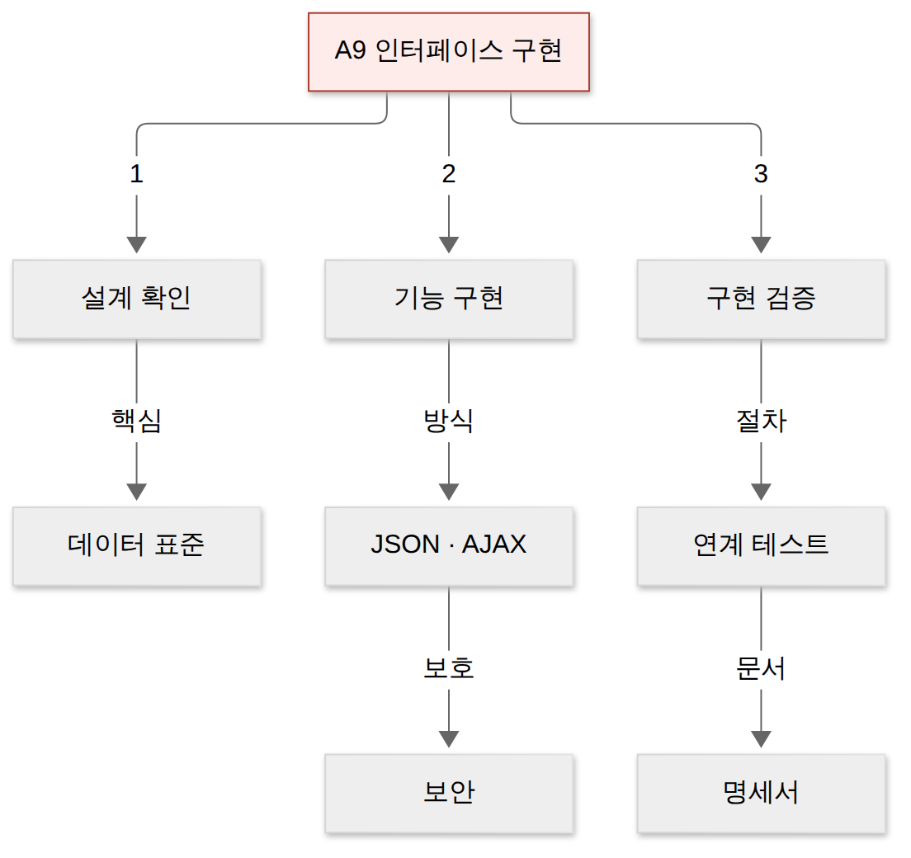
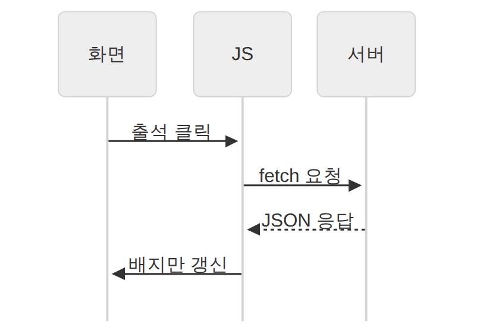
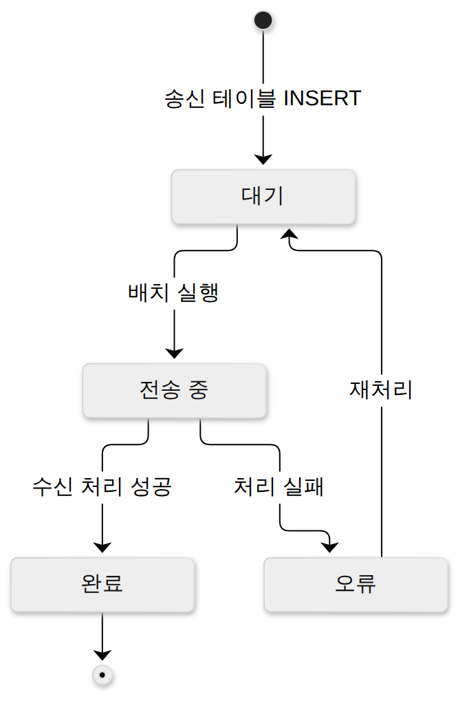
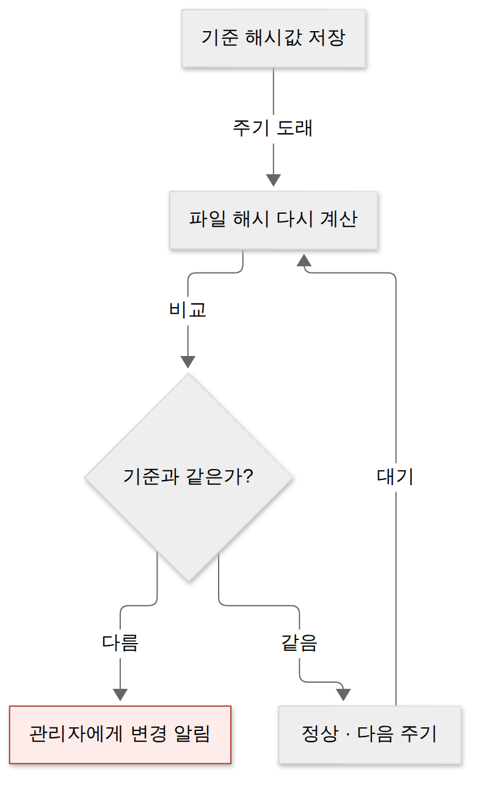
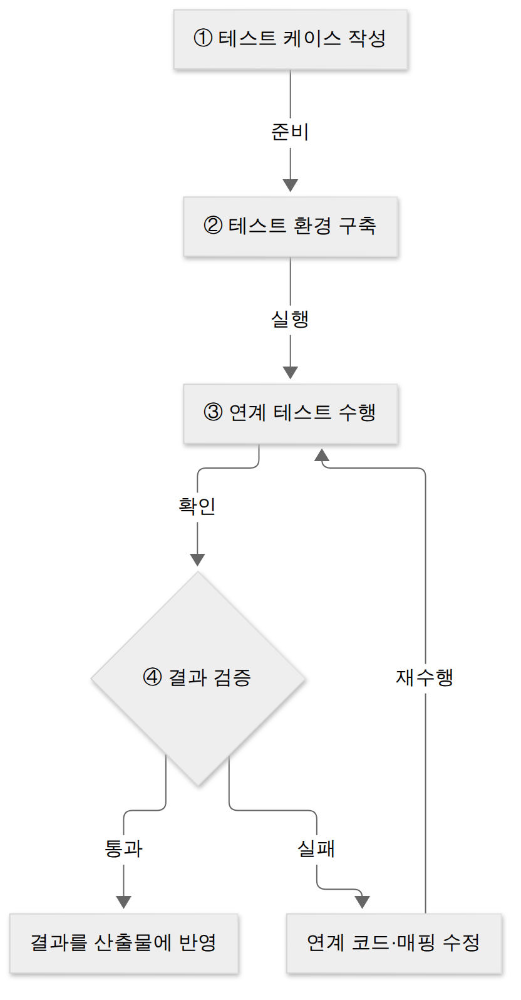
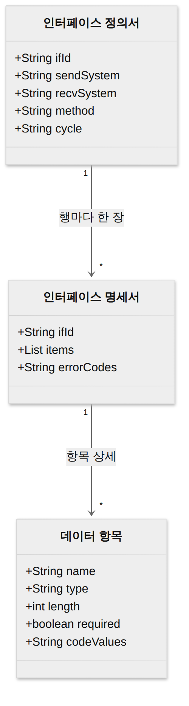

D028 · 인터페이스 구현: 데이터 표준·JSON/AJAX·인터페이스 보안·구현 검증
A9 1과목의 마지막 카드예요. 지난주 D015·D017에서 시스템끼리 무엇을, 어떤 방식으로 주고받을지 설계했죠. 오늘은 그 설계대로 연계를 실제로 만들고, 지키고, 확인하는 인터페이스 구현을 봐요. 예시는 스터디 앱 ‘공부친구’가 제휴 학원 시스템과 출석·결제 데이터를 주고받는 연계 하나로 끝까지 따라가요.
- 데이터 표준 확인의 이유와 구현 방식(데이터 통신 — JSON·XML·AJAX / 인터페이스 엔티티)을 구별할 수 있다
- 인터페이스 보안 기술을 네트워크(IPSec·SSL/TLS·S-HTTP)·애플리케이션·데이터베이스 영역에 짝지을 수 있다
- 연계 테스트 절차와 검증 도구(xUnit · STAF · FitNesse · NTAF · Selenium · watir)·감시 도구(APM)를 설명할 수 있다
- 인터페이스 정의서·명세서의 구성과 설계 산출물에 구현 결과를 반영하는 이유를 설명할 수 있다
1. 큰 그림 — 설계도대로 길을 실제로 놓는다
A4 인터페이스 설계에서는 송수신 시스템을 찾고, 주고받을 데이터와 방식을 정해 설계서를 썼어요. 그런데 설계서는 아직 종이일 뿐이에요. A4가 지도에 길을 그린 단계라면, A9는 실제로 아스팔트를 깔고 신호등을 달고 개통식 날 차를 굴려 보는 단계예요.
인터페이스 구현은 송신 시스템과 수신 시스템이 설계대로 데이터를 주고받도록 연계 기능을 만들고 검증하는 활동이에요. 공식 범위의 세부 항목은 세 칸이에요. 설계서가 지금도 맞는지 다시 확인하고(설계 확인), 연계 코드와 보안을 만들고(기능 구현), 잘 붙었는지 테스트하고 운영 중에 감시해요(구현 검증).
세 칸 아래에는 시험이 실제로 묻는 세세항목이 매달려 있어요. 데이터 표준, 구현 방식(JSON·AJAX 등), 인터페이스 보안, 연계 테스트와 도구, 설계 산출물과 명세서예요. 아래 지도의 가지 순서가 곧 오늘 장면 순서예요.

→ 이 장면의 결과물: 오늘 다룰 세 칸과 다섯 가지의 지도. 그래서 첫 장면은 코드를 짜기 전에 설계서를 다시 펼쳐 보는 설계 확인이에요.
2. 장면 1 — 설계 확인: 같은 단어를 같은 뜻으로 (데이터 표준 확인)
설계서를 들고 바로 코딩에 들어가면 안 되는 이유가 있어요. 설계 뒤에 요구가 바뀌었을 수도 있고, 설계서가 두 시스템 중 한쪽 사정만 반영했을 수도 있어요. 그래서 구현 첫 단계는 설계서를 현실과 대조하는 설계 확인이에요.
설계 확인은 세 가지를 차례로 봐요. 먼저 모듈 간 공통 기능과 데이터 인터페이스를 확인해요. 여러 모듈이 함께 쓰는 기능(예: 회원 인증)과, 모듈 사이를 오가는 데이터가 무엇인지 정리하는 일이에요. 다음으로 인터페이스 기능을 식별해요. 어떤 연계가 필요하고 EAI·ESB 같은 어떤 구축 유형을 쓸지는 D017에서 본 대로예요.
마지막이 오늘의 주인공 데이터 표준 확인이에요. 데이터 표준은 송수신하는 데이터 항목의 이름, 형식, 길이, 코드값, 필수 여부를 양쪽이 같은 규칙으로 쓰도록 정한 약속이에요. 기존 데이터 중 공통 영역을 추려 송신 쪽과 수신 쪽 표준을 하나로 정리해요.
표준을 확인하지 않으면 무슨 일이 생길까요? 한쪽은 ‘1’이 출석, 다른 쪽은 ‘1’이 결석이라면, 연계는 성공했는데 학생은 전원 결석 처리돼요. 에러 하나 없이 틀리는 게 제일 무서워요. 날짜 형식이나 인코딩도 마찬가지예요. 한글이 ‘출섒으로 보이는 순간, 두 시스템이 서로 다른 언어로 속삭였다는 증거예요.
한 장 요약 — 표준 확인 때 빠짐없이 보는 항목이에요.
| 확인 항목 | 공부친구 예 | 어긋나면 |
|---|---|---|
| 형식(날짜·숫자) | 날짜를 YYYY-MM-DD로 통일 | 파싱 오류, 10월 30일이 엉뚱한 날로 저장 |
| 코드값 | 출석 Y, 결석 N | 오류 없이 반대 의미로 저장 |
| 길이·타입 | 학생 ID 문자 10자리 | 잘림, 앞자리 0 사라짐 |
| 문자 인코딩 | UTF-8 | 한글 깨짐 |
| 필수 여부 | 학생 ID·날짜는 필수 | 빈 값이 들어와 수신 처리 실패 |
→ 이 장면의 결과물: 양쪽이 합의한 데이터 표준. 그래서 다음 장면은 이 표준대로 데이터를 실제로 실어 나르는 연계 기능을 만드는 일이에요.
3. 장면 2 — 기능 구현: 메시지로 보낼까, 테이블에 내려놓을까
표준이 정해졌으니 이제 데이터를 옮길 길을 만들 차례예요. 길은 크게 두 종류예요. 상대에게 메시지를 직접 던지는 길과, 중간 테이블에 내려놓고 상대가 가져가게 하는 길이에요.
데이터 통신을 이용한 구현은 애플리케이션 영역에서 송신 시스템이 데이터를 JSON이나 XML 같은 형식의 메시지로 만들어 네트워크로 보내고, 수신 시스템이 그 메시지를 풀어(파싱) 처리하는 방식이에요. 공부친구 앱이 출석 버튼을 누르는 순간 학원 API를 호출하는 게 이 방식이에요. 실시간에 가깝다는 게 장점이고, 상대 시스템이 그 순간 살아 있어야 한다는 게 대가예요.
인터페이스 엔티티를 이용한 구현은 송신 쪽과 수신 쪽에 연계 전용 테이블(인터페이스 엔티티)을 두고, 송신 시스템이 송신 테이블에 데이터를 쓰면 배치나 트리거가 수신 테이블로 옮기는 방식이에요. 결제 내역을 밤마다 학원 정산 테이블로 넘기는 게 이 방식이에요. 상대가 잠깐 죽어 있어도 데이터가 테이블에 남아 있어 안정적이지만, 즉시성은 떨어져요.
한 장 요약 — 두 방식을 나란히 놓으면 이래요.
| 구분 | 데이터 통신 방식 | 인터페이스 엔티티 방식 |
|---|---|---|
| 무엇을 매개로 | JSON·XML 메시지, HTTP·AJAX | 송신·수신 전용 DB 테이블 |
| 실시간성 | 높음(호출 즉시) | 낮음(배치 주기·트리거) |
| 장점 | 빠르고 유연, 웹·모바일과 잘 맞음 | 상대 장애에도 데이터 보존, 이력 추적 쉬움 |
| 대가 | 상대가 살아 있어야 함 | 테이블 관리 부담, 지연 |
JSON — 키와 값의 가벼운 메모
JSON(JavaScript Object Notation)은 속성-값 쌍(키와 값)으로 데이터 객체를 표현하는, 텍스트 기반의 가벼운 개방형 표준 형식이에요. 이름처럼 자바스크립트 객체 표기법에서 나왔지만 거의 모든 언어가 읽고 써요. 사람이 눈으로 읽기 쉽고 기계가 파싱하기도 쉬워서, 웹 서버와 브라우저, 서버와 서버 사이 데이터 교환의 기본 형식이 됐어요.
구조는 단순해요. 중괄호가 객체, 그 안의 "키": 값이 속성, 대괄호가 배열이에요. 값에는 문자열·숫자·참거짓·null·다른 객체·배열이 올 수 있어요.
XML — 이름표를 여닫는 공문서
XML(eXtensible Markup Language)은 사용자가 태그를 정의해 데이터의 구조와 의미를 표현하는 마크업 언어예요. 모든 값을 여는 태그와 닫는 태그로 감싸고, 스키마(XSD 등)로 어떤 태그가 어떤 순서로 와야 하는지까지 엄격하게 검증할 수 있어요. 그래서 공공·금융의 오래된 연계, SOAP 웹 서비스에 많이 남아 있어요.
XML은 내용마다 여는 이름표와 닫는 이름표를 붙이는 공문서, JSON은 키와 값만 적은 메모 쪽지예요. 같은 말을 해도 쪽지가 가볍죠. 아래는 같은 출석 한 건을 두 형식으로 적은 거예요.
{
"student": "kim",
"date": "2026-10-30",
"attend": "Y"
}<attendance>
<student>kim</student>
<date>2026-10-30</date>
<attend>Y</attend>
</attendance>AJAX — 화면 전체 말고 필요한 칸만
AJAX(Asynchronous JavaScript and XML)는 웹 페이지 전체를 새로 고치지 않고, 자바스크립트로 서버와 비동기 통신해 필요한 부분만 갱신하는 기법이에요. 예전에는 XMLHttpRequest, 요즘은 fetch로 요청을 보내고 응답을 받아 화면의 일부만 바꿔요. 형식이 아니라 통신 기법이라는 점이 중요해요.
공부친구에서 출석 버튼을 누르면 페이지가 하얗게 깜빡이지 않고 출석 배지만 바뀌어요. 식당에서 물 한 잔 더 달라고 했는데 테이블을 통째로 치우고 다시 차리면 곤란하죠. AJAX는 컵만 채워 주는 기술이에요.

인터페이스 엔티티의 처리 흐름
테이블로 주고받는 방식은 “잘 넘어갔는지”를 테이블 안의 상태 플래그로 추적해요. 송신 시스템이 행을 넣을 때 상태는 대기, 배치가 집어 가면 전송 중, 수신 쪽이 처리하면 완료나 오류로 바꿔요. 오류 행은 원인을 고친 뒤 대기로 되돌려 다시 보내요. 덕분에 “어제 결제 몇 건이 왜 안 넘어갔나”를 SQL 한 줄로 찾을 수 있어요.

→ 이 장면의 결과물: 출석은 JSON 메시지로, 정산은 인터페이스 테이블로 오가는 연계 기능. 그런데 이 길 위로 결제 정보가 다니니, 다음 장면은 자물쇠를 다는 일이에요.
4. 장면 3 — 인터페이스 보안: 어디에 자물쇠를 다나
연계 구간은 공격자가 좋아하는 자리예요. 시스템 두 개가 만나는 경계라 책임이 애매하고, 데이터가 네트워크를 건너는 동안 엿보기(스니핑)나 중간에서 바꿔치기(변조)를 당할 수 있어요. 그래서 인터페이스 구현에는 보안 기능이 함께 들어가고, 시험은 그 기능을 어느 영역에 적용하나로 나눠 물어요.
네트워크 영역은 오가는 트래픽 자체를 암호화해 엿보기와 변조를 막아요. 송신 시스템과 수신 시스템 사이 구간이 대상이고, 쓰는 기술이 IPSec, SSL/TLS, S-HTTP예요. 셋은 아래에서 계층 위치로 다시 갈라요.
애플리케이션 영역은 연계 코드 자체의 취약점을 막아요. 받은 데이터를 믿지 않고 형식·길이·범위를 검증하고, SQL을 문자열로 이어 붙이지 않는 식의 시큐어 코딩 가이드를 따르는 거예요. 취약점 목록은 5과목에서 자세히 봐요.
데이터베이스 영역은 연계 데이터가 저장되는 곳을 지켜요. 연계 계정에는 필요한 테이블에만 접근 권한을 주고, 데이터 처리는 프로시저·트리거로 정해진 경로로만 하게 하고, 카드번호 같은 중요 데이터는 암호화, 통계용 데이터는 익명화해요.
한 장 요약 — 세 영역을 공부친구 연계에 대 보면 이래요.
| 영역 | 지키는 것 · 기술 | 공부친구 예 |
|---|---|---|
| 네트워크 | 전송 중인 트래픽 · IPSec, SSL/TLS, S-HTTP | 학원 API는 HTTPS로만 호출 |
| 애플리케이션 | 연계 코드의 취약점 · 시큐어 코딩 | 받은 학생 ID 형식·길이 검증, 파라미터 바인딩 |
| 데이터베이스 | 저장된 데이터 · 권한, 프로시저·트리거, 암호화·익명화 | 연계 계정은 정산 테이블만, 카드번호 암호화 |
IPSec · SSL/TLS · S-HTTP — 층으로 가르기
IPSec은 네트워크 계층(IP)에서 패킷 단위로 인증과 암호화를 적용하는 프로토콜이에요. IP 패킷 자체를 감싸므로 그 위로 지나가는 모든 응용 트래픽이 한꺼번에 보호돼요. 본사와 지사를 잇는 VPN이 대표 쓰임이에요.
SSL/TLS는 전송 계층 위에서 두 응용 사이의 세션을 암호화해요. TLS가 SSL의 후속 표준이라 지금 실제로 쓰는 건 TLS예요. 우리가 매일 보는 HTTPS가 HTTP를 SSL/TLS 위에 얹은 것이에요. IPSec은 두 건물 사이에 지하 전용 통로를 뚫는 것, SSL/TLS는 오가는 대화 하나하나를 금고 가방에 넣는 거예요.
S-HTTP(Secure HTTP)는 응용 계층에서 HTTP 메시지 하나하나를 암호화하는 방식이에요. 통신 채널 전체를 잠그는 HTTPS와 달리 메시지 단위로 서명·암호화해요. 실제로는 거의 쓰이지 않지만 시험 목록에는 꼬박꼬박 나와요.
데이터 무결성 검사 도구
암호화가 엿보기를 막는다면, 누가 연계 서버의 설정 파일이나 실행 파일을 몰래 바꿨는지는 어떻게 알까요? 데이터 무결성 검사 도구는 시스템 파일의 해시값을 기준으로 저장해 두고, 주기적으로 다시 계산해 비교해서 변경 여부를 확인하고 관리자에게 알리는 도구예요. 대표가 Tripwire이고, AIDE, Samhain, Claymore, Slipwire, Fcheck도 같은 계열이에요.

→ 이 장면의 결과물: 세 겹 자물쇠를 단 연계 기능. 이제 남은 질문은 “정말 설계대로 붙었나, 운영 중에도 잘 도나”예요.
5. 장면 4 — 구현 검증: 잘 붙었나, 지금도 잘 도나
연계는 혼자 테스트할 수 없다는 게 특징이에요. 공부친구 쪽 단위 테스트가 다 통과해도, 학원 시스템이 날짜를 다르게 읽으면 실패예요. 그래서 송신과 수신을 실제로 이어 붙여 보는 연계 테스트가 따로 필요해요.
연계 테스트는 송신 시스템에서 데이터를 보내 수신 시스템에 정상 반영되기까지를 확인하는 테스트예요. D026의 통합 테스트가 한 시스템 안 모듈 사이의 인터페이스를 본다면, 연계 테스트는 시스템 사이의 인터페이스를 봐요. 절차는 케이스 작성, 환경 구축, 수행, 결과 검증 네 단계이고, 검증에서 실패하면 코드나 매핑을 고쳐 다시 돌려요.

검증 도구 여섯
xUnit은 JUnit(Java), NUnit(.NET)처럼 여러 언어를 지원하는 단위 테스트 프레임워크 묶음이에요. 연계 코드의 변환·파싱 로직을 단위로 검증할 때 써요. STAF는 서비스 호출과 컴포넌트 재사용 등 다양한 환경을 지원하는 테스트 프레임워크로, 각 테스트 대상 장비에 데몬을 띄워 분산 환경에서 테스트를 돌려요.
FitNesse는 웹 기반으로 테스트 케이스를 표 형태로 작성·실행하고 결과를 확인하는 프레임워크라, 기획자와 개발자가 같은 화면에서 케이스를 함께 다듬는 협업에 강해요. NTAF는 FitNesse의 협업 장점과 STAF의 재사용·확장성을 통합한 테스트 자동화 프레임워크예요. NTAF는 둘을 합친 합체 로봇이라, 시험은 거의 항상 “누구와 누구를 합쳤나”만 물어요.
Selenium은 여러 브라우저와 여러 언어에서 웹 애플리케이션 테스트를 자동화하는 도구예요. AJAX 출석 버튼이 실제 브라우저에서 잘 동작하는지 확인할 때 써요. watir는 같은 웹 테스트 계열이지만 Ruby 기반이라는 점으로 구별해요.
한 장 요약 — 도구 이름과 구별 단서예요.
| 도구 | 특징 | 연상 단서 |
|---|---|---|
| xUnit | 여러 언어 단위 테스트(JUnit 등) | x = 언어 자리 |
| STAF | 서비스 호출·재사용, 분산 데몬 | S = Service |
| FitNesse | 웹 기반 표로 케이스 작성·실행, 협업 | Fit = 웹에서 함께 |
| NTAF | FitNesse + STAF 통합 | 합체 |
| Selenium | 여러 브라우저·언어 웹 테스트 | 브라우저 |
| watir | Ruby 기반 웹 테스트 | Ruby |
| 스카우터 · 제니퍼(APM) | 운영 중 성능·자원 감시 | 감시 도구 |
감시 도구 — 개통 뒤의 순찰
테스트를 통과해도 운영 중에는 학원 서버가 느려지거나 응답이 끊길 수 있어요. 그래서 구현 검증에는 감시 도구도 포함돼요. 애플리케이션 성능 관리 도구 APM(D022)으로 연계 구간의 트랜잭션·응답 시간·자원 사용을 계속 모니터링해요. 국산 대표가 오픈소스 스카우터와 상용 제니퍼예요. 스카우터라는 이름처럼, 운영 중인 연계 구간을 정찰병이 계속 돌아보는 게 감시 도구예요.
→ 이 장면의 결과물: 연계 테스트 결과와 운영 감시 체계. 테스트하다 고친 내용이 생겼으니, 마지막 장면은 문서를 현실에 맞추는 일이에요.
6. 장면 5 — 설계 산출물·명세서: 만든 대로 문서를 맞춘다
테스트하면서 “학생 ID를 10자리에서 12자리로 늘리자”처럼 바뀐 게 생겨요. 이걸 문서에 반영하지 않으면, 반년 뒤 연계를 고치는 사람은 틀린 문서를 믿고 일하게 돼요. 그래서 구현 검증의 마지막은 결과를 설계 산출물에 되돌려 적는 일이에요.
인터페이스 정의서는 시스템 사이에 오가는 인터페이스 전체를 한 장에 모은 목록이에요. 행마다 인터페이스 ID, 송신 시스템, 수신 시스템, 연계 방식(실시간·배치, 데이터 통신·엔티티), 주기가 적혀요. 공부친구라면 “IF-001 출석 전송, 공부친구 → 학원, JSON·실시간”, “IF-002 결제 정산, 공부친구 → 학원, 인터페이스 테이블·매일 02시” 같은 행이 생겨요.
인터페이스 명세서는 정의서의 한 행을 한 장으로 펼친 상세 문서예요. 데이터 항목마다 이름, 타입, 길이, 필수 여부, 허용 코드값을 적고, 실패 때 돌려줄 오류 코드도 정해요. 장면 1의 데이터 표준이 바로 여기에 기록돼요. 정의서는 아파트 단지 배치도, 명세서는 각 세대 평면도예요. 이사 업체는 평면도가 있어야 냉장고 자리를 알아요.

한 장 요약 — 두 문서를 가르면 이래요.
| 구분 | 인터페이스 정의서 | 인터페이스 명세서 |
|---|---|---|
| 단위 | 시스템 전체에 한 장(목록) | 인터페이스 하나에 한 장(상세) |
| 주요 항목 | 인터페이스 ID, 송수신 시스템, 방식, 주기 | 데이터 항목·타입·길이·필수·코드값, 오류 코드 |
| 언제 쓰나 | 연계 범위를 한눈에 볼 때 | 실제 개발·테스트·장애 분석 때 |
장면 · 하는 일 · 시험 개념 · 결과물을 한 번에 꿰면 이래요.
| 장면 | 하는 일 · 시험 개념 | 결과물 |
|---|---|---|
| 1 설계 확인 | 공통 기능·연계 기능 확인, 데이터 표준 확인 | 합의한 데이터 표준 |
| 2 기능 구현 | 데이터 통신(JSON·XML·AJAX) / 인터페이스 엔티티 | 연계 기능 |
| 3 보안 | 네트워크·애플리케이션·DB 영역, 무결성 검사 도구 | 세 겹 자물쇠 |
| 4 구현 검증 | 연계 테스트, 검증 도구 6, 감시 도구 APM | 테스트 결과·감시 체계 |
| 5 산출물 | 정의서·명세서에 결과 반영 | 최신 인터페이스 설계서 |
→ 이 장면의 결과물: 현실과 맞는 인터페이스 설계서. 이걸로 A9, 그리고 1과목 진도가 끝났어요. 남은 건 예정된 오답 두 개예요.
7. 오답 복습 — 아키텍처 측면, 그리고 퀵 정렬의 두 얼굴
첫 번째는 D011의 소프트웨어 아키텍처 품질 속성이에요. 품질을 보는 렌즈가 셋이에요. 시스템 측면은 시스템이 돌아갈 때 드러나는 품질로 성능, 보안, 가용성, 사용성, 변경 용이성 같은 것들이에요. 비즈니스 측면은 사업 관점의 품질로 시장 적시성, 비용과 혜택, 예상 시스템 수명이에요.
아키텍처 측면은 시스템을 돌리기 전, 설계도 자체가 얼마나 잘 짜였나를 봐요. 전체 설계가 하나의 일관된 생각으로 묶였는지(개념적 무결성), 요구를 빠짐없이 바르게 담았는지(정확성과 완결성), 주어진 인력·기간 안에 실제로 만들 수 있는지(구축 가능성)예요. “운영할 때 빠른가”는 시스템, “돈이 되나”는 비즈니스, “설계도가 말이 되나”는 아키텍처 렌즈예요.
두 번째는 D027의 정렬 복잡도예요. 퀵 정렬은 피벗을 기준으로 작은 값과 큰 값을 나눈 뒤 양쪽을 다시 정렬해요. 피벗이 매번 가운데쯤 오면 반씩 쪼개져 평균 O(n log n)이지만, 이미 정렬된 배열에서 맨 앞을 피벗으로 고르는 식으로 한쪽에 쏠리면 최악 O(n²)까지 느려져요. 퀵 정렬은 평소엔 이름값을 하지만 운 나쁜 날에만 느려져요. ‘평균’과 ‘최악’ 중 어느 날을 묻는지가 문제의 전부예요.
| 정렬 | 평균 | 최악 |
|---|---|---|
| 버블 · 선택 · 삽입 | O(n²) | O(n²) |
| 퀵 | O(n log n) | O(n²) |
| 병합 · 힙 | O(n log n) | O(n log n) |
| 헷갈리는 짝 | 가르는 질문 |
|---|---|
| 시스템 측면 vs 아키텍처 측면 | 돌아가는 시스템을 보나, 설계도 자체를 보나? |
| 퀵 vs 병합·힙 | 최악일 때도 n log n을 지키나? |
8. 1과목 지도 — A1~A9 한 장
오늘로 1과목 아홉 개 주요항목을 모두 한 번씩 돌았어요. 따로 외운 것 같지만 사실은 프로젝트 하나의 순서예요. 아홉 정류장을 따로 외운 줄 알았는데, 알고 보니 버스 노선 하나였던 셈이에요. 요구를 확인하고(A1), 화면(A2)과 애플리케이션 구조(A3)와 시스템 사이 연계(A4)를 설계하고, 그 과정을 어떤 방법론으로 진행할지 정하고(A5), 모듈을 만들어 통합하고(A6), 패키징해 배포하고(A7), 테스트하고 성능을 고치고(A8), 마지막으로 설계해 둔 연계를 구현·검증해요(A9).
내일 D029부터 2과목을 시작하고, 일요일 D030에서 이번 주 범위와 1과목 전체를 진단 문제로 점검해요. A4(설계)와 A9(구현)처럼 이름이 닮은 짝이 진단의 단골이 될 거예요.
확인 문제
- 속성-값 쌍(키와 값)으로 데이터 객체를 표현하는 가벼운 텍스트 기반 개방형 표준 형식으로, 자바스크립트 객체 표기에서 유래해 웹 서버와 브라우저 사이의 비동기 데이터 교환에 널리 쓰이는 것은?
- 인터페이스 보안 중 네트워크 계층(IP)에서 패킷 단위로 인증과 암호화를 적용하며, 본사·지사 사이 VPN 구축에 주로 쓰이는 프로토콜은?
- 인터페이스 구현 검증 도구 중 FitNesse의 협업 기능과 STAF의 재사용·확장성을 통합한 테스트 자동화 프레임워크는?
- (누적) 기준선이 정해진 요구사항에 변경 요청이 들어왔다. 요청을 접수한 바로 다음에 해야 할 일로 가장 알맞은 것은?
- (누적) 휘어지는 디스플레이나 손에 쥔 사물 표면처럼 사물 자체가 입력과 출력 장치가 되는 사용자 인터페이스는?
- (오답 재확인) 소프트웨어 아키텍처 품질 속성 중 “주어진 인력·기간·기술로 이 아키텍처를 실제로 만들 수 있는가”를 뜻하는 구축 가능성이 속한 측면은?
- (오답 재확인) 다음 정렬 알고리즘 중 평균 시간 복잡도는 O(n log n)이지만, 피벗이 한쪽으로 쏠리는 최악의 경우 O(n²)까지 느려지는 것은?
고른 뒤 답안 복사 → 디스코드 공부 채널에 붙여넣기 하면 돼요.
답장: 정처기 D028: 1)번호 2)번호 3)번호 4)번호 5)번호 6)번호 7)번호
1과목 진도 끝이에요. 내일 D029는 2과목 첫날이고, 일요일 D030에서 1과목 전체를 진단해요. 어제 D027 답장 고마워요. 오늘 것도 편할 때 보내 주세요.